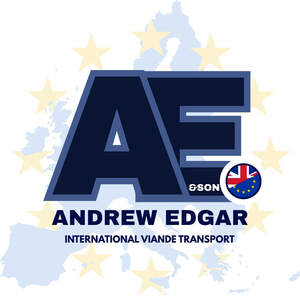

Trade Mark Journal No.2025/035 29 August 2025
UK00004251663 19 August 2025 (12,29,30,31,39)

- Class 12
- Spikes for tyres / Spikes for tires / Studs for tyres / Studs for tires; Tailgates (Am.) Elevating -, Power -[parts of land vehicles]; Vehicles [Anti-glare devices for -]; Covers for foot pedals on cycles; Babies' carriages; Plastic strakes for use on aircraft; Jon boats; Carriers for cycles for use on vehicles; Plastic struts for use on aircraft; Toeclips for use on bicycles; Cycle carriers for use on vehicles; Carriers for use on vehicles.
- Class 29
- Ryazhenka; Kephir; Fromage frais.
- Class 30
- Shao mai; Petits fours; Beverages based on tea; Beverages based on coffee; Drinks based on cocoa; Half covered chocolate biscuits; Petit fours; Drinks based on chocolate; Lo mein; Beverages based on chocolate; Biscuits with an iced topping.
- Class 31
- Marc.
- Class 39
- Transport; Tram transport; Bus transport; Taxi transport; Railway transport; Transport of goods; Transport and storage; Monorail transport; Ambulance transport; Barge transport; Tanker transport; Transport of passengers; Passenger transport; Transport services; Air transport; Rail transport services; Cable-car transport; Transport of food; Ferryboat transport; Bus transport services; Helicopter transport; Car transport; Ferry transport services; Truck transport; Ship transport; Railway transport services; Transport of parcels; Air cargo transport services; Air cargo transport; Boat transport; Arranging of transport; Streetcar transport; Marine transport; Minibus transport services; Space transport; Ferry-boat transport; Vessel transport; Transport and storage of goods; Freight train transport; Road transport services; Chartering of transport; Air transport services; Container transport services; Arranging of passenger transport; Waste transport; Armored-car transport; Passenger transport services; Booking of transport; Arranging for the transport of air freight; Transport of valuables; Vehicle transport services; Car transport services; Ship transport services; Transport of travellers; Travellers (Transport of -); River transport; Railway passenger transport; Road transport services for passengers; Transport of travelers; Freight ship transport; Arrangement of taxi transport; Arranging of transport and travel; Air transport of passengers; Transport and delivery of goods; Transport of oil; Transportation; Transport of furniture; Transport of packages; Water transport services; River transport services; Arrangement of transport; Transport of goods by rail; Reservation of rail transport; Passenger road transport services; Services for chartering railway transport; Air passenger transport services; Arranging of air transport; Transport of pets; Passenger train transport; Transport of money; Marine transport services; Road rescue [transport] services; Transport reservation; Reservation (Transport -); Rescue [transport] services; Air transport of valuables; Transport of persons; Coach transport; Transport brokerage; Brokerage (Transport -); Cargo ship transport; Rescue [transport] of vehicles in the air; Transport by rail; Hire of transport vehicles; Transport by ferry; Transportation of cargo; Cargo transportation; Transport of freight by rail; Transport and storage of waste; Arrangement of passenger transport; Transport of cargo by air; Omnibus transport services; Rescue [transport] of vehicles in the water; Hire of road transport; Reservation of ferry transport; Arranging transport of passengers by rail; Guarded transport of goods; Passenger ship transport; Transport of freight containers by rail; Rental of transport vehicles; Rental of vehicles for transport; Transport of passengers by rail; Transport of freight by air; Guarded transport; Transport of cranage; Rental of horses for transport; Road transport services for persons; Armoured vehicle transport; Freight and transport brokerage; Transportation of freight; Freight transportation; Transport and freight brokerage; Refrigerated transport of food; Armoured car transport; Distribution [transport] of goods by road; Reservation of air transport; Coach transport services; Transport and storage of trash; Travel and transport reservation services; Arranging transport for travelers; Air transportation services for cargo; Hiring of transport vehicles; Transportation logistics; Transport of passengers by bus; Transport of freight containers by lorry; Transport of motor vehicles; Handling [transport] of rubbish; Motor car transport services.
Andrew Edgar Transport LTD